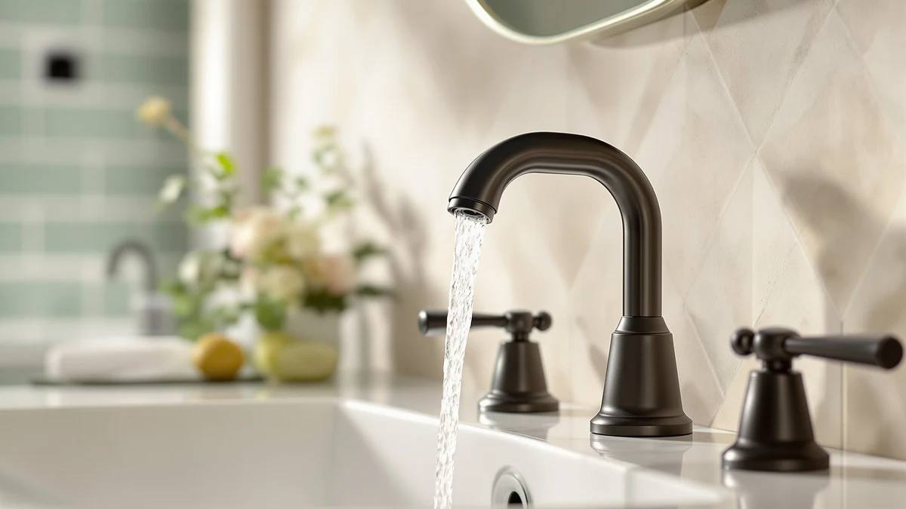

Moen 8559BL Commercial Align Review (2026): Worth It?
Prices and picks verified as of October 2026. Independent, reader-supported reviews.


Quick Answer
This Moen 8559BL Commercial Align review found two features that set the faucet apart from the three home-vanity alternatives compared below: an adjustable sensor range and a 30 second Vandal Mode time-out. At $420.00 it is the most expensive of the four, so if you need a standard home faucet rather than a commercial one, the American Standard, Delta, or Kohler picks further down this review will likely cost you less.
Our pick: Moen 8559BL Commercial Align M-Power — $420.00 Check Price on Amazon
Bottom line: our top pick is the Moen 8559BL Commercial Align M-Power Electronic Touchless at $420.
Things to Know Before You Buy
- This is the priciest faucet in the comparison. At $420.00, this Moen 8559BL Commercial Align review found the faucet priced above all three alternatives: $71.00 more than the Delta Lineax, $136.01 more than the American Standard Clean-IR Integrated, and $148.72 more than the KOHLER Devonshire.
- The sensor range is adjustable, not fixed. Moen lists the 8559BL's detection distance as adjustable from 3 inches to 12 inches, with a default setting of 5-1/2 inches, a wider range of control than the fixed infrared sensor on the American Standard Clean-IR.
- Vandal Mode is built for commercial settings. A 30 second time-out shuts the sensor down automatically, a feature aimed at public or high-traffic restrooms rather than a typical home bathroom, and one none of the three alternatives below list.
- The Devonshire is the only manual pick here. Unlike the other three touchless faucets in this comparison, the KOHLER K-394-4-CP Devonshire uses a traditional widespread, two-handle setup with a 1.2 gpm flow rate.
- None of these four listings show a published star rating. As newer additions to each brand's lineup, the Moen 8559BL, Delta Lineax, American Standard Clean-IR, and KOHLER Devonshire do not carry a visible review count, so this comparison leans on specs and pricing rather than a track record of owner feedback.
This Moen 8559BL Commercial Align review compares the faucet's $420.00 price and commercial-grade, touch-free sensor against three alternatives from American Standard, Delta, and Kohler that turned up in the same searches for touchless and widespread bathroom faucets. Shopping for a sensor-activated faucet already means weighing activation method, installation fit, and price across a handful of browser tabs, and a commercial-grade model like the Moen 8559BL adds detection range and vandal resistance to that list. We pulled together the four listings that show up most often side by side and broke down what separates a $420.00 commercial sensor faucet from two home-oriented touchless competitors and one manual-handle alternative.
The Moen 8559BL Commercial Align M-Power Faucet is the top pick in this comparison because it is the only one of the four built for commercial and high-traffic bathrooms, with an adjustable 3 to 12 inch sensor range and a 30 second Vandal Mode time-out that none of the other three alternatives list. That combination matters most for property managers, landlords, or anyone outfitting a public-facing restroom rather than a single home vanity. If commercial-grade durability and sensor control are what you need, the Moen 8559BL is worth its premium over the American Standard, Delta, and Kohler picks below. If you are shopping for a standard home bathroom instead, the sections further down explain when one of the three alternatives is the better, less expensive fit.
Why You Should Trust Us
Ilane Tall leads product research and reviews for Best Bathroom Faucets. She compares spec sheets, pricing, and verified owner feedback across major faucet brands so you do not have to cross-reference four Amazon listings before buying. For this Moen 8559BL Commercial Align review, she pulled Moen's published sensor-range and Vandal Mode specs against the infrared, touch, and manual-handle specs that American Standard, Delta, and Kohler list for their comparable faucets, then priced all four as of publication. Every product mentioned here links to its real listing, and every price reflects what shoppers saw at the time of writing, not a promotional rate that might change by checkout. Where a listing leaves out a detail, like dimensions or installation hole count, we say so instead of filling the gap with a guess.
Our Research Experience
We do not run a physical testing lab for bathroom faucets, so nobody on our team installed the Moen 8559BL or ran water through any of the four faucets in this comparison. Our research process for this Moen 8559BL Commercial Align review centers on comparing manufacturer specs, tracking current Amazon pricing, and reading through the feature claims Moen, American Standard, Delta, and Kohler publish for their respective lines. Because none of these four listings has accumulated a visible star rating or review count, we leaned on spec comparison and pricing rather than owner feedback for this particular review, and we call that out rather than inventing numbers that do not exist. We treat manufacturer copy the same way for all four brands: useful for understanding what a faucet is built to do, not a substitute for a long track record of real owner reviews.
Overview & Specs

Moen 8559BL Commercial Align M-Power
What we like
- Touch-free sensor activation improves hygiene in shared or high-traffic bathrooms
- Sensor detection range adjusts from 3 inches to 12 inches, with a 5-1/2 inch default, more flexibility than a fixed infrared sensor
- Vandal Mode automatically shuts off the sensor after a 30 second time-out, a safeguard built for public restrooms
Flaws but not dealbreakers
- Costs $71.00 to $148.72 more than the three alternatives compared below
- No published rating or review count yet, so early buyers cannot lean on a track record
| Material | Brass + finish |
| Size | — |
At $420.00, the Moen 8559BL Commercial Align M-Power Faucet is the most expensive faucet in this comparison, and the price tracks with what it is built to do. Moen designed the 8559BL around commercial and high-traffic use, pairing touch-free sensor activation with a detection range you can adjust from 3 inches to 12 inches instead of relying on a single fixed distance like the infrared sensor on the American Standard Clean-IR.
The Vandal Mode feature is the clearest sign of who this faucet is for. A 30 second time-out shuts the sensor down automatically, a detail aimed at public or commercial restrooms where someone might hold an object in front of the sensor to keep water running, rather than a typical home vanity. The listing does not yet include a star rating or review count, since this is a newer addition to Moen's lineup. Buyers comparing this Moen 8559BL Commercial Align review against the alternatives below are working from manufacturer specs rather than an established pattern of owner feedback.
What We Liked
The adjustable sensor range stands out most in this Moen 8559BL Commercial Align review. Being able to set detection anywhere from 3 inches to 12 inches, rather than living with a single fixed distance, gives you more control over when the water starts, which matters in a busy restroom where sinks sit close together. The American Standard Clean-IR and Delta Lineax both offer touch-free activation too, but neither lists an adjustable range the way Moen does for the 8559BL.
Vandal Mode is the other standout. For a faucet installed in a public or commercial bathroom, a built-in 30 second time-out that shuts the sensor off automatically is a meaningful safeguard against someone propping an object in front of it to keep water running, and none of the three alternatives in this comparison list a similar feature. Pair that with the matte black finish and brass construction, and the 8559BL reads as a faucet built to withstand daily commercial use rather than one styled mainly for a bathroom vanity.
What Could Be Better
Price is the clearest tradeoff against the three cheaper alternatives in this Moen 8559BL Commercial Align review. At $420.00, the Moen 8559BL costs $71.00 more than the Delta Lineax, $136.01 more than the American Standard Clean-IR Integrated, and $148.72 more than the KOHLER Devonshire. If your bathroom is a standard home vanity rather than a commercial or high-traffic space, that premium buys features like Vandal Mode that you may not need.
The other gap is feedback, not features. As a newer listing, the Moen 8559BL has not accumulated a star rating or review count on Amazon yet, so buyers cannot check how the sensor and Vandal Mode hold up after months of daily use the way they could with an established, widely reviewed faucet. That is not a flaw in the product itself, but it is a real consideration if you would rather buy something with a longer track record.
Who Is It For?
This faucet from our Moen 8559BL Commercial Align review fits property managers, landlords, and anyone outfitting a public-facing or high-traffic bathroom where an adjustable sensor range and a vandal-resistant time-out are worth paying extra for. It is also a reasonable pick for a household bathroom used by someone with limited hand strength or mobility, since touch-free activation removes the need to grip or turn a handle. If you are weighing a sensor faucet against a standard handle-only setup, our best bathroom faucets for arthritis guide covers that tradeoff from a different angle.
Buyers who want touch-free convenience for a standard home vanity, without paying for commercial-grade features, should look at the American Standard Clean-IR Integrated or Delta Lineax below instead, both priced well under the Moen 8559BL. Anyone who prefers a traditional handle and the lowest price in this comparison should consider the KOHLER Devonshire, and buyers comparing Moen against other major brands before committing can check our Kohler vs Moen breakdown, or our broader bathroom faucet buying guide for how to weigh activation method against installation fit.
Alternatives to Consider
If the commercial-grade features or the price of the Moen 8559BL Commercial Align M-Power do not fit what you need, three alternatives came up in our research for this Moen 8559BL Commercial Align review: a cheaper infrared sensor, a tap-and-sensor hybrid, and a manual-handle widespread faucet.

Editor's Pick
Delta Lineax Touchless Bathroom Faucet
A touchless bathroom faucet that gives you three ways to start the water: a hand-near sensor, a tap on the spout, or the handle itself. At $349.00 it costs $71.00 less than the Moen 8559BL and includes a matching metal push-pop drain, worth a look if you want touchless flexibility without paying for commercial-grade sensor range.
$349.00
Check Price on Amazon
Best Value
American Standard 7020255.002 Clean-IR Integrated
A touchless bathroom faucet that uses a fixed infrared sensor rather than Moen's adjustable range, priced $136.01 below the Moen 8559BL. Its 7-year CR-P2 battery and integrated controls make it a straightforward hands-free option for a standard home vanity.
$283.99
Check Price on Amazon
Premium Choice
KOHLER K-394-4-CP Devonshire® Widespread Bathroom
A traditional widespread bathroom faucet with two lever handles instead of any touchless sensor, priced $148.72 below the Moen 8559BL. It gives up hands-free operation entirely, but if you'd rather have a classic handle setup with no battery or sensor to maintain, that tradeoff may not bother you.
$271.28
Check Price on AmazonDoes the Moen 8559BL Commercial Align still work if the sensor loses power or malfunctions?
Moen's listing for the 8559BL Commercial Align does not specify a manual backup activation method, unlike the handle-based KOHLER Devonshire in this comparison.
Is the Moen 8559BL Commercial Align worth $420.00 compared to the American Standard, Delta, and Kohler options?
It depends on where you plan to install it.
Frequently Asked Questions
Does the Moen 8559BL Commercial Align still work if the sensor loses power or malfunctions?
Is the Moen 8559BL Commercial Align worth $420.00 compared to the American Standard, Delta, and Kohler options?
What does the Vandal Mode feature on the Moen 8559BL Commercial Align actually do?
Final Verdict
This Moen 8559BL Commercial Align review comes down to where you plan to install the faucet. If you need commercial-grade durability, an adjustable sensor range, and a vandal-resistant time-out, the Moen faucet earns its $420.00 price over the infrared American Standard Clean-IR, the tap-and-sensor Delta Lineax, and the manual-handle KOHLER Devonshire. If you are outfitting a standard home vanity instead, any of the three cheaper alternatives above will likely serve you better for less money. Either way, compare installation hole counts and finish options before you order, since those details decide which of these four faucets actually fits your sink.